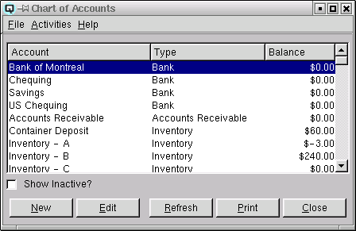

Chart of Accounts

The account list displays a complete list of the chart of accounts.
New accounts may created and existing
accounts may be viewed and edited.
List Table
-
- Account - The name of the account.
- Type - The type of account.
-
- Bank - Identifies the account as a bank account.
- Accounts Receivable - Identifies the account as being a
receivable account. Receivable accounts are used for providing
customers with a line of credit. Multiple receivable accounts may be
defined. For example, you may wish to seperate regular receivables
from government or comercial receivables.
- Other Current Assets - Identifies the account as being a current
asset other than a bank type account or a receivable type account. A
prepaid bill is an example of a current asset.
- Fixed Asset - Identifies the account as being a fixed
asset. Fixed assets include such things a buildings and land.
- Other Asset - Identifies the account as being an asset other than
a current asset or a fixed asset.
- Accounts Payable - Identifies the account as being a payable
account. A payable account is used for the purchase of
products. Multiple payable accounts may be defined.
- Credit Card - Identifies the account as being a credit card
account (for company credit cards).
- Other Current Liability - Identifies the account as being a
current liability other than a payable account or a credit card
account. Federal tax payable is an example of a liability account.
- Long Term Liability - Identifies the account as being a long term
liability. A mortgage is an example of a long term liability.
- Equity - Identifies the account as being an equity
account. The share holder capital in a company.
- Income - Identifies the account as being a standard income
account. Sales accounts are all income account.
- Cost of Goods Sold - Identifies the account as a cost of goods
sold account. When a product is sold the inventory is reduced by the
cost of the goods sold. The cost of goods sold accounts keep track of
your total cost of sales.
- Expense - Identifies the account as being a standard
expense account. Expense accounts are for all expenses such a fuel,
power, water, rent and staff costs.
- Other Income - Identifies the account as being a non-standard
income account.
- Other Expense - Identifies the account as being a non-standard
expense account.
- Balance - The current balance of the account.
- Inactive - The active state of the account.
Show Active
Toggle on or off. Toggle on to display both active and non-active
accounts. Toggle off to display only active accounts.
New
Select this function to create a account.
Edit
Select this function to edit the high-lighted account.
Refresh
Clicking on refresh will refresh the data on the screen.
Print
Select this function to print the contents of the list to the
printer.